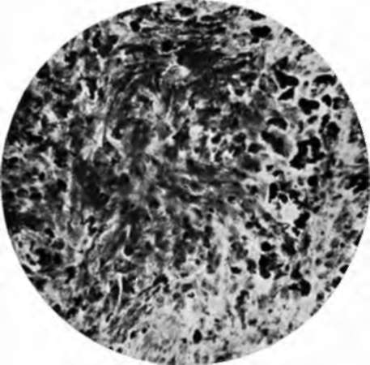

Nevocarcinomata And Malignant Melanomata (Malignant Pigmented Moles). Continued
Description
This section is from the book "Skin Cancer", by Henry H. Hazen, A.B., M.D.. Also available from Amazon: Skin Cancer.
Nevocarcinomata And Malignant Melanomata (Malignant Pigmented Moles). Continued
On the other hand, many pathologists hold that the nevoid cells, especially the chromatophores, have their origin in the mesoderm. On this side are grouped Virchow, Soldan,* Borst,* Kreibich, Rib-bert,* and Adami.12
*Fordyce: Jour. Amer. Med. Assn., 1910, liv, 91.
*von Denieville: Virchow's Arch. f. Path. Anat., 1880, lxxxi, 333.
*von Recklinghausen: ttber die Multiplen Fibrome der Haut, Berlin, 1882.
*Krompecher: Der Basalzellenkrebs.
*Hodara: Monatsh. f. prakt. Dermat., 1897, xxv, 205.
Johnston,* in a very complete article, decides that nevi are usually of endothelial origin, springing from the lymph vessels. Fordyce holds that nevi may have a twofold origin. He states: "In some the character of the cells conforms more closely with those of the epidermis, and can hardly be distinguished from the prolongations of the latter, which enter the mole. In others there appears to be another variety, consisting of cells with vesicular nuclei, with faint or no tinctorial properties and a well-defined border. Their shape in general is round, but this may be modified by mutual pressure. Fibers from the connective tissue may be seen between individual cells and groups of them".
As regards the origin of the tumors proper, a number have been definitely proven to be of epithelial origin, and therefore entitled to the name of carcinomata. The cases reported by the following men are now almost universally classed as of epithelial origin: Johnston, Gilchrist,* Waelsch,* Whitfield,* Darier,* Schalek,* and Ravogli.19 Johnston comes to the following conclusions: (1) Aside from the natural division into choroid and skin tumors, melanotic neoplasms, which, from their diversity of origin, are best called me-lanomata, show several varieties. (2) The commonest, and therefore the most important, is that derived from the soft nevi, which are endotheliomata of lymph vessel origin. Nevomelanomata, whose histogenesis it is not possible to determine, must be referred to the same origin. (3) A second variety exists with the same histologic pictures, which does not spring from nevi, and whose origin is directly traceable to endothelium, probably also lymphatic. This group includes the melanotic whitlow and the malignant lentigo of the French. (4) A third division is truly epithelial in origin, although its existence has been denied. These tumors are of various types and show only very slight tendency to malignancy, a fact sufficient in itself to determine a cardial difference from the melanoendothelio-mata, whose capacity in this direction can hardly be exaggerated. (5) A histological diagnosis is the only proper method of differentiation between the two. Adami says: "Pigmented tumors of a pure epitheliomatous type are unknown," but Fordyce thinks that he is mistaken in this.
*Soldan: Arch. f. Klin. Chir., 1899, lix, 261.
*Borst: Die Lehre von den Geschwiilsten, 1902, 117. "Ribbert: Geschwiilstelehre, 1904, 277.
*Adami: Principles of Pathology, i, 764.
*Johnston: Jour. Cutan. Dis., 1905, xxiii, 1. "Gilchrist: Jour. Cutan. Dis., 1899, xvii, 117. "Waelsch: Arch. f. Dermat. u. Syphil., 1900, xlix, 249. "Whitfield: Brit. Jour. Dermat., 1900, xii, 267. "Darier: La Pratique Dermatologie, iii, 1903. "Schalek: Jour. Cutan. Dis., 1900, xviii, 147.
*Ravogli: Jour. Cutan. Dis., 1901, xix, 1.
To the author the following conclusions seem irresistible: (1) Nevoid cells have a twofold origin, one from the basal cells of the epidermis, and another, not yet determined, possibly from the endothelium. (2) Malignant melanomata of the skin spring directly from these cells. (3) Melanotic sarcomata may spring from other organs, as from the choroid, the gall-bladder (Duval),20 adrenal (Orth)," and many other organs. (4) Lymphangioendotheliomata are not nearly so malignant as these tumors (see chapter on endothelial tumors). (5) Basal-celled carcinomata are certainly not as malignant as this group. The whole question, then, is still unsettled, although it seems probable that some of these tumors are ca~ cinomata and some sarcomata.
Fig. 49.-Low-power photomicrograph of a malignant pigmented mole (nevocarcinoma). (Author's collection).
Microscopically, a fully developed tumor (Figs. 49, 50) shows either an alveolar arrangement of large or small cells, bundles of spindle- and oat-shaped cells, or a combination of the two, the picture varying in different portions of the same tumor. The amount of chromatin varies; in some fields not only the cell nucleus may be obscured, but even the cell shape, while in other fields it is present in comparatively small amounts. Borst has pointed out that there was more pigment near the great blood vessels. The melanin, which is the pigment present, is in the form of fine amorphous granules, varying in color from a golden yellow to a very deep brown. It is generally conceded to be the final stage of the cell, and, where there is most, the cell is the oldest or the best nourished. As regards the origin of the melanin, it is still undetermined whether it arises from the blood, or whether it orginates in the cutis or the epidermis.
* Duval: Montreal Medical Jour.. 1908. xxxvii. 270. "Orth: Berlin klin Wchnschr.. 190K, xxvl.
Fig. 60.-High-power photomicrograph of malignant mole. (Author's collection).
Diagnosis
As a general rule, the diagnosis of these tumors is only too easy, for they are rarely seen before metastases have occurred. In the author's experience two conditions have proven troublesome, which may best be illustrated by case reports. In the first instance a young girl consulted him because of a jet-black tumor that had developed upon the edge of an old vaccination scar. Examination showed a tumor about the size of a pea, firmly adherent to the deeper layers of the skin, and with dilated blood vessels extending from it. It was completely excised with a wide margin, and microscopical examination showed that there had been a small venous angioma, into which hemorrhage had taken place some time before, and that the blood pigment had remained. The other case was somewhat similar. On the edge of the nostril there had developed a mass that was black in color, and the diagnosis of melanoma was made. Histological examination, as well as the later course of the disease, showed that the growth was inflammatory tissue into which hemorrhage had taken place with the deposit of blood pigment. Histologically, this case was very difficult to distinguish from a true melanotic tumor, and was watched with a certain amount of jsuspicion for some months.
Prognosis
The prognosis is bad. Bloodgood* states that he lias the record of but one case that has survived-a case of Dr. Wain-wright, of Scranton, who is alive seventeen years after operation. The histological picture was such that the true melanotic nature of the tumor could not be doubted. Pringle* has reported two cures, which Bloodgood* does not accept. As a general rule, patients die inside of two years, but in a few instances life is prolonged well beyond that time. It is possible that in some few instances life might be saved by a very extensive early operation, an operation including the glands.
Treatment
Prevention is much better than cure. Every acquired mole should be removed, preferably with either the knife or actual cautery, so as not to irritate the nests of nevoid cells. Every congenital mole that is subjected to irritation should be removed. Whenever a mole begins to grow, or to show any evidences of either irritation or ulceration, it is an imperative sign for immediate operative interference, although this will often be too late. When skin or internal metastases have manifested themselves, treatment is useless; neither Coley's serum, x-ray, nor radium will have the slightest influence. In the cases where the involvement is glandular only, either extensive block dissection of the glandular vessels and glands, or, if the growth be upon a limb, amputation might cure.
*Bloodgood: Progressive Medicine, Dec, 1912. * Pringle: Edinburgh Med. Jour., June, 1908. 94 Bloodgood: Progressive Med., Dec., 1909.
Continue to:
- prev: Chapter IX. Nevocarcinomata And Malignant Melanomata (Malignant Pigmented Moles)
- Table of Contents
- next: Chapter X. Carcinoma En Cuirasse-Carcinoma By Extension- Metastatic Carcinoma-Paget's Disease
Tags
bookdome.com, books, online, free, old, antique, new, read, browse, download